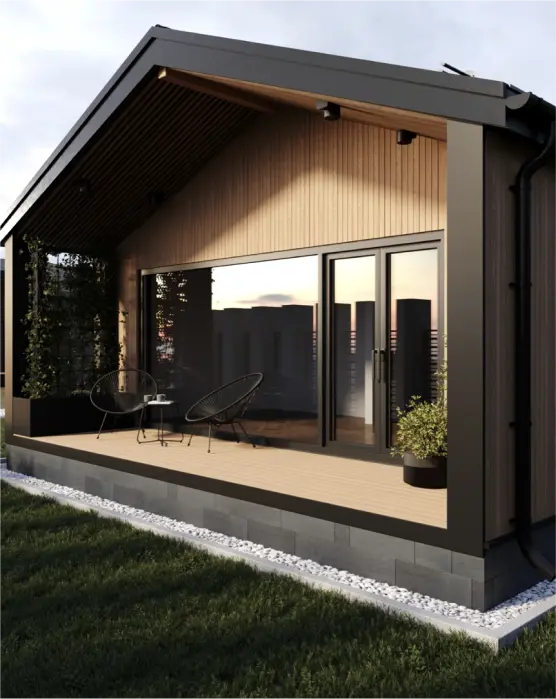

About us
Trident Modular Housing produce and assemble modular houses that are very high quality and they can be used as temporary as well as permanent residence.
An enterprise combining the joint expertise of a UK-based chartered architectural practice and an experienced Ukrainian manufacturer.
Trident Modular Housing LTD :Trident Modular Housing is a bespoke garden room, modular building designer, and manufacturer.
Our high-quality, energy-saving products are designed with the end user in mind and can be customized to meet any specific client’s requirements.
Our main aim is to provide our customers with a fast, cost-effective service. We are able to achieve this with the help of the newest building technologies for manufacturing and assembly.
FAQ
Can the garden rooms be used all year round?
The insulation in a Trident Modular garden room is second to none. The room will be warm inwinter and cool in summer – available to use all year round.How much input can I have in the design of my building?You tell us about your vision for your new garden room, and we will work with you toget the design just right. External and internal finishes can all be amended to suityour budget and taste. The room will reflect your own style.
Can I divide the space into the rooms I want?
The insulation in a Trident Modular garden room is second to none. The room will be warm inwinter and cool in summer – available to use all year round.How much input can I have in the design of my building?You tell us about your vision for your new garden room, and we will work with you toget the design just right. External and internal finishes can all be amended to suityour budget and taste. The room will reflect your own style.
How long to install a room?
The insulation in a Trident Modular garden room is second to none. The room will be warm inwinter and cool in summer – available to use all year round.How much input can I have in the design of my building?You tell us about your vision for your new garden room, and we will work with you toget the design just right. External and internal finishes can all be amended to suityour budget and taste. The room will reflect your own style.
Can I divide the space into the rooms I want?
The insulation in a Trident Modular garden room is second to none. The room will be warm inwinter and cool in summer – available to use all year round.How much input can I have in the design of my building?You tell us about your vision for your new garden room, and we will work with you toget the design just right. External and internal finishes can all be amended to suityour budget and taste. The room will reflect your own style.
Can the garden rooms be used all year round?
The insulation in a Trident Modular garden room is second to none. The room will be warm inwinter and cool in summer – available to use all year round.How much input can I have in the design of my building?You tell us about your vision for your new garden room, and we will work with you toget the design just right. External and internal finishes can all be amended to suityour budget and taste. The room will reflect your own style.
can the garden rooms be used all year round?
the insulation in a trident modular garden room is second to none. the room will be warm inwinter and cool in summer – available to use all year round.how much input can i have in the design of my building?you tell us about your vision for your new garden room, and we will work with you toget the design just right. external and internal finishes can all be amended to suityour budget and taste. the room will reflect your own style.
can the garden rooms be used all year round?
the insulation in a trident modular garden room is second to none. the room will be warm inwinter and cool in summer – available to use all year round.how much input can i have in the design of my building?you tell us about your vision for your new garden room, and we will work with you toget the design just right. external and internal finishes can all be amended to suityour budget and taste. the room will reflect your own style.